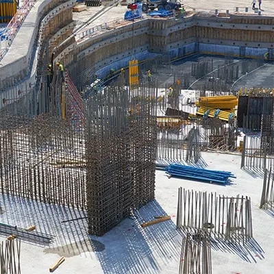
Konstruksi Bangunan
Pembangunan gedung baru dari pondasi hingga struktur atap: rumah tinggal, ruko, kantor, gudang, hingga pabrik dengan standar mutu terukur.
Selengkapnya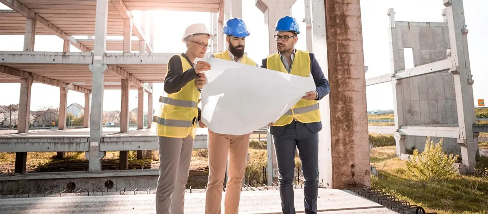
PT Bangun Prima Konstruksi dipercaya lebih dari 25 tahun membangun rumah, gedung komersial, pabrik, dan infrastruktur dengan mutu terjaga, tepat waktu, dan sesuai anggaran.
Insinyur, arsitek, dan pelaksana bersertifikat SKK Konstruksi dengan pengalaman lapangan bertahun-tahun.
Material standar SNI, pengawasan berlapis, dan garansi pekerjaan untuk setiap proyek yang kami serahkan.
Tim layanan pelanggan siap menerima laporan dan keluhan kapan saja, termasuk perbaikan darurat.
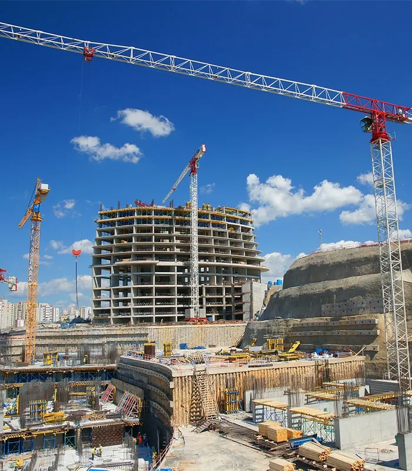
Berawal dari kontraktor rumah tinggal skala kecil, BangunPrima kini tumbuh menjadi perusahaan konstruksi umum dengan ratusan proyek di berbagai kota di Indonesia. Kami percaya bangunan yang baik lahir dari perencanaan matang, material berkualitas, dan pekerja yang terlatih.
Setiap proyek kami tangani dengan pendekatan yang sama: komunikasi terbuka, biaya transparan, dan komitmen penuh pada jadwal serta keselamatan kerja. Hasilnya, sebagian besar klien kami kembali mempercayakan proyek berikutnya kepada kami.
Satu perusahaan untuk seluruh kebutuhan bangunan Anda: perencanaan, pembangunan, renovasi, hingga perawatan.

Pembangunan gedung baru dari pondasi hingga struktur atap: rumah tinggal, ruko, kantor, gudang, hingga pabrik dengan standar mutu terukur.
Selengkapnya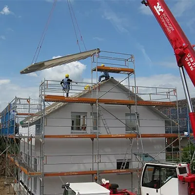
Perbaikan, penambahan ruang, dan peremajaan bangunan lama agar lebih kuat, nyaman, dan bernilai tambah tanpa mengorbankan fungsi.
Selengkapnya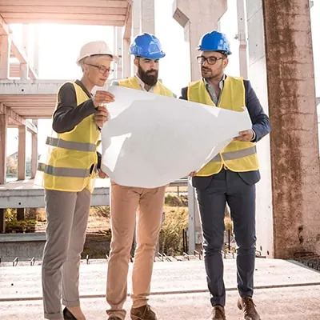
Perancangan arsitektur dan struktur oleh tim berpengalaman, lengkap dengan gambar kerja, rencana anggaran biaya (RAB), dan visualisasi 3D.
Selengkapnya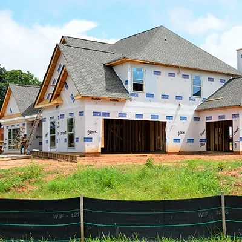
Penataan ruang dalam dan pekerjaan finishing yang rapi: dari plafon, lantai, dinding, hingga furnitur custom sesuai karakter Anda.
Selengkapnya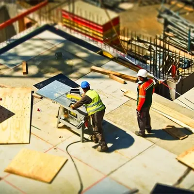
Layanan perawatan berkala dan perbaikan cepat untuk atap bocor, retak dinding, instalasi MEP, serta pemeliharaan fasilitas gedung.
Selengkapnya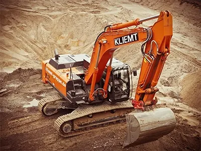
Pematangan lahan, galian dan timbunan, jalan lingkungan, saluran drainase, serta pekerjaan sipil pendukung dengan alat berat milik sendiri.
SelengkapnyaEnam komitmen yang kami pegang di setiap proyek, besar maupun kecil.
Penjadwalan berbasis kurva-S dan evaluasi mingguan menjaga proyek tetap sesuai target serah terima.
RAB rinci per item pekerjaan. Setiap perubahan lingkup disetujui tertulis sebelum dikerjakan.
Seluruh pelaksana dan pengawas memiliki SKK Konstruksi sesuai bidang dan jenjangnya.
Briefing keselamatan harian, APD lengkap, dan petugas K3 khusus di setiap lokasi proyek.
Pemasok terverifikasi, uji laboratorium untuk beton dan baja, serta penggunaan produk berstandar SNI.
Perbaikan tanpa biaya atas cacat pekerjaan selama masa pemeliharaan sesuai kontrak.
Enam tahap sederhana yang membuat proyek Anda berjalan tertib dan mudah dipantau.
Kami mendengar kebutuhan, menilai kondisi lahan, dan memberikan masukan awal secara gratis.
Tim arsitek dan estimator menyusun gambar kerja, spesifikasi, serta RAB yang transparan.
Kesepakatan tertulis yang jelas: lingkup, jadwal, termin pembayaran, dan pengurusan PBG/SLF.
Pekerjaan dimulai dengan jadwal terkontrol, tenaga bersertifikat, dan penerapan K3 yang ketat.
Pemeriksaan material, uji beton, dan inspeksi berkala memastikan hasil sesuai standar.
Bangunan diserahkan bersama dokumen lengkap dan masa garansi pekerjaan hingga 12 bulan.
Sebagian dari proyek yang telah kami selesaikan dan sedang kami kerjakan.
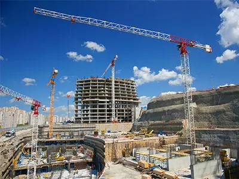
Selesai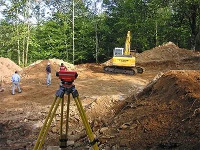
Berjalan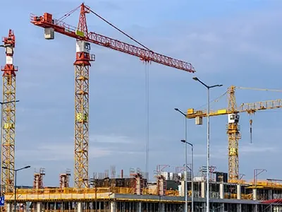
Berjalan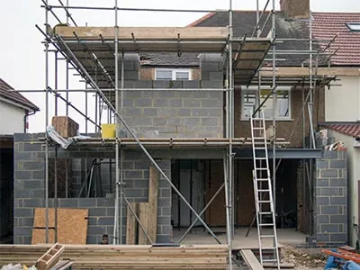
Selesai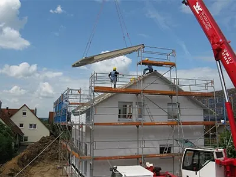
SelesaiKepercayaan klien adalah bukti terbaik kualitas pekerjaan kami.
Proyek gudang kami selesai sebelum tenggat. Komunikasinya jelas, laporan progres mingguan rapi, dan tidak ada biaya tersembunyi. Sangat profesional.
Dari desain sampai serah terima, semuanya terkoordinasi. Hasil finishing rumah kami rapi dan tukangnya sopan. Kami pasti merekomendasikan BangunPrima.
Sudah tiga proyek perumahan kami serahkan ke BangunPrima. Mutu konsisten, K3 diterapkan disiplin, dan penanganan komplain cepat.
Renovasi ruko tanpa menutup usaha ternyata bisa. Tim mengatur jadwal kerja dengan cermat sehingga omzet kami tetap berjalan.
Rata-rata 6 hingga 9 bulan untuk rumah dua lantai seluas 200-300 m², tergantung kompleksitas desain, kondisi lahan, dan cuaca. Jadwal pasti kami tetapkan dalam kontrak setelah survei lokasi.
Tidak. Konsultasi awal dan survei lokasi di wilayah Jabodetabek tanpa biaya. Untuk luar kota, kami akan menginformasikan skema kunjungan terlebih dahulu.
Pembayaran dilakukan bertahap (termin) berdasarkan progres pekerjaan yang telah diverifikasi bersama. Umumnya terdiri dari uang muka, beberapa termin progres, dan pelunasan setelah serah terima.
Ya. Kami membantu penyusunan dokumen teknis serta pengurusan Persetujuan Bangunan Gedung (PBG) dan Sertifikat Laik Fungsi (SLF) bila diperlukan.
Setiap proyek dilengkapi masa pemeliharaan dan garansi pekerjaan hingga 12 bulan. Cacat yang timbul akibat kesalahan pelaksanaan kami perbaiki tanpa biaya tambahan.
Konsultasi dan survei lokasi awal tanpa biaya. Tim kami siap merespons dalam 1 x 24 jam kerja.